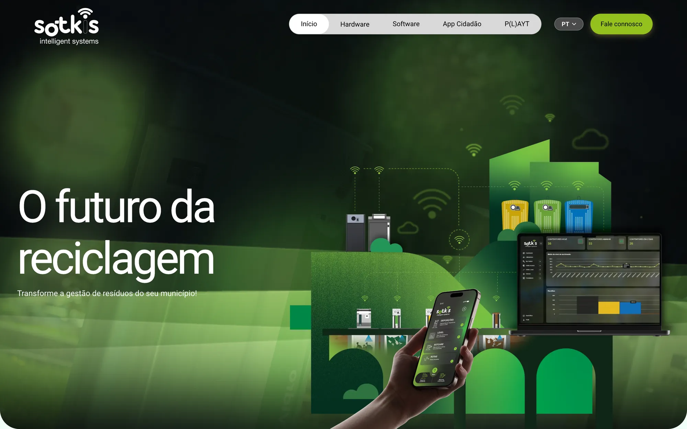
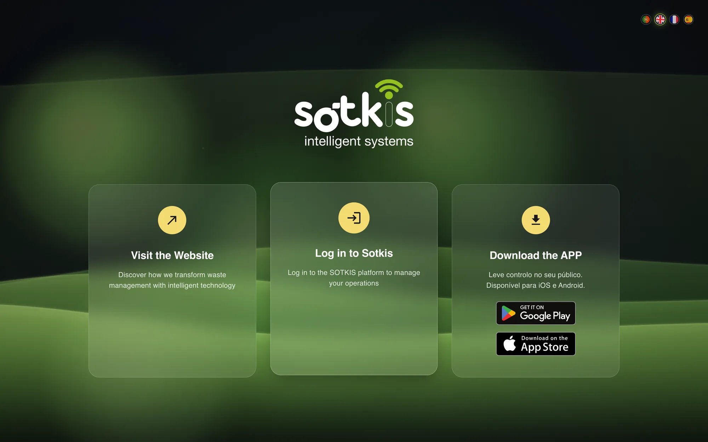
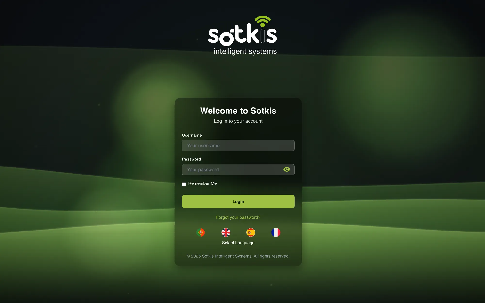
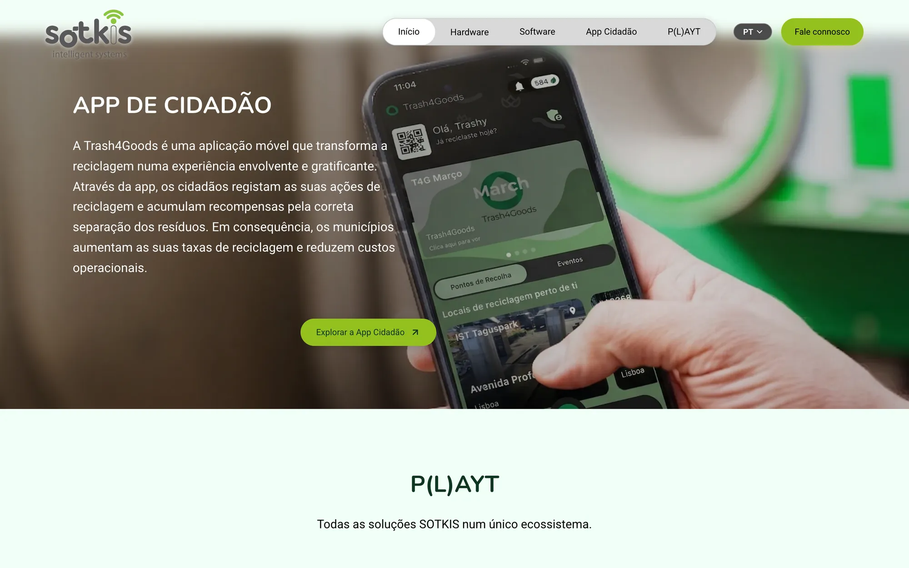
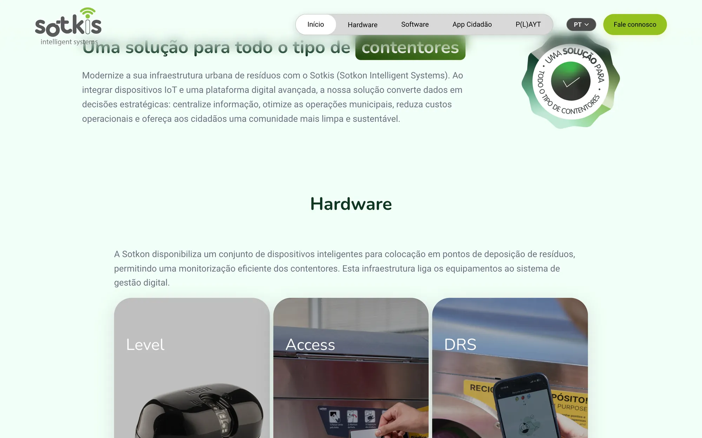
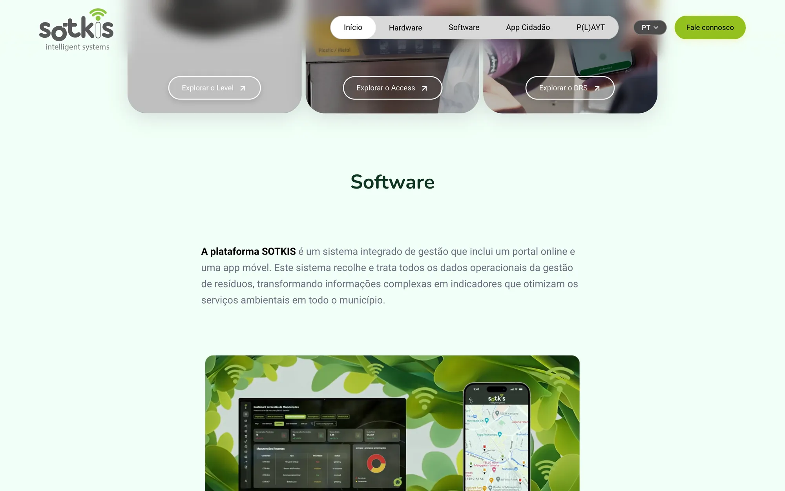
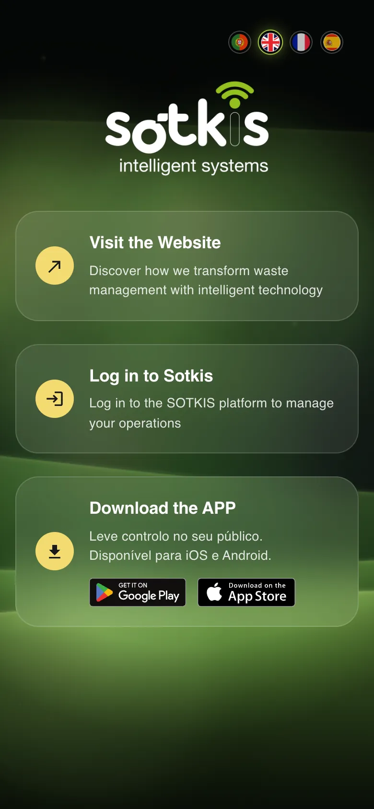
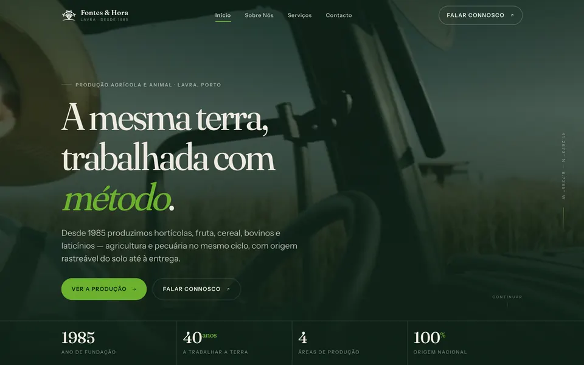

Sotkis
Um ecossistema para cidades mais limpas — do contentor inteligente ao cidadão que recicla — desenhado como uma só experiência.

A Sotkis transforma a gestão de resíduos urbanos com contentores inteligentes, controlo de acessos, sensores de enchimento e pagamento por utilização.
O desafio: uma porta de entrada única para três públicos — quem conhece a marca, quem opera a plataforma e o cidadão que usa a app.
Desenhámos o hub de entrada, o website institucional — hardware (Level, Access, DRS), software e P(L)AYT —, a app do cidadão e a plataforma de gestão, com a mesma linguagem verde, luminosa e tecnológica em todas as superfícies.






- 3superfícies: website, app e plataforma
- iOS + Androidapp do cidadão nas duas lojas
- 1linguagem visual para todo o ecossistema
Próximo projeto — 05
Fontes & Hora
